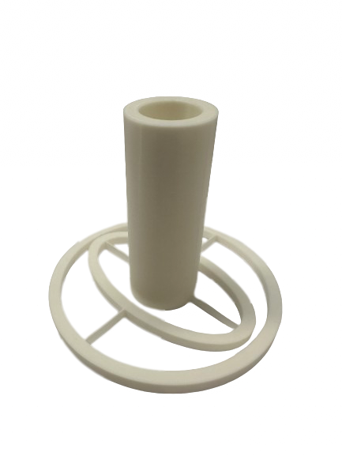

3D Print
Overview:
For my 3D print I wanted to create a compliant mechanism that I am able to use for my final project. My final project is a Thrust Vector Controlled Rocket and I wanted to design a rocket thruster housing.
Design:
I started with a basic sketch with arbitrary values as this print would serve as a proof of concept for later prints. The outer ring had an outer diameter of 100mm and an inner diameter of 90mm. The inner ring is an ellipse, this is so that the rocket engine housing is able to move just as freely as the inner ring. The ellipse is 85mm by 50mm and has a width of 10mm. The rocket engine housing has an outer diameter of 30mm and an inner diameter of 20mm.

Next I extruded the sketches to finally come up with a body. I extruded everything that was not the rocket engine housing 5mm and the rocket engine housing 80mm.
This system is supposed to be able to move without axles/screws, rather it should be able to move only by tension of the plastic. The inner and outer rings are connected with very thin lines of plastic (0.5mm). The inner ring and rocket housing are also connected with the same system. These thin lines of plastic are supposed to bend and flex which allows the rocket thruster to have full range of motion. When these axes are hooked up to servo motors the movement of the rocket engine housing will be automated.
Print Settings:
Print 1:
This design had many flaws in it, although the complient mechenism could hold up to the weight of itself, when put under some stress the system would fail. After a redesign the system had thicker and more circular pipes that held the rings together.

As shown above, the pipes are not thicker and that allows for more rigid structures and a system that is much more durable. Next we worked on a servo mounting system so the thruster could actually move.
Once we printed these (for our final project) this was the main application: